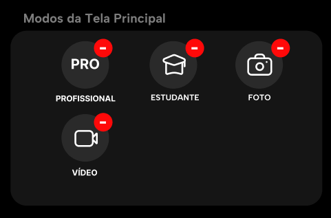

Sobre o Novo "Modo Estudante"
A tecnologia mobile da JOVI acaba de dar mais um grande passo. Conheça a nova função da câmera, o Modo Estudante, que transforma cada foto em uma experiência prática e organizada para sua lhe auxiliar durante sua rotina.

Esse novo modo estará disponível assim como os outros modos já presentes na câmera, ao selecionar o Modo Estudante, aparecerá um pequeno ícone de pasta com um "+" do lado esquerdo da tela, ao clicar nesta pasta o usuário será levado para sua galeria na área de pastas, onde poderá selecionar uma pasta que já existe ou criar uma nova, o que faz com que o usuário organize suas fotos em suas respectivas pastas.


Após selecionar a pasta desejada, o úsuario será levado novamente a câmera, mas agora o ícone de pasta aparecerá como confirmado, mostrando que já tem uma pasta selecionada e para localizar em que pasta as fotos serão levadas, na parte de cima do ícone estará escrito "Pasta Ativa" e em seguida o nome da pasta, o que torna fácil de identificar em qual pasta as fotos estarão e ajudará na organização e praticidade para os que usarem o modo.

Em resumo, esse novo modo irá tornar a vida dos estudantes e de pessoas com um rotina corrida mais fácil e organizada, funcionando como um ficheiro digital dentro da câmera, documentos, anotações, atividades e conteúdos importantes poderão ser armazenados de forma organizada e acessados facilmente depois. Um modo criado e pensado para você.